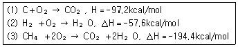
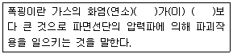
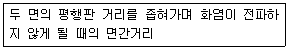
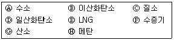
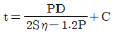
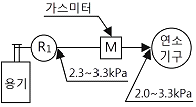
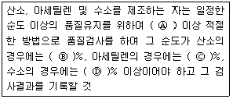
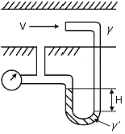
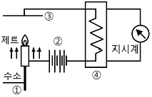
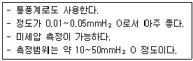

가스산업기사 (2018-09-15 기출문제)
1과목: 연소공학
1. 어떤 기체가 열량 80kJ을 흡수하여 외부에 대하여 20kJ의 일을 하였다면 내부에너지 변화는 몇 kJ인가?
- 20
- 60
- 80
- 100
(정답률: 85%)

2. 가스화재 시 밸브 및 콕을 잠그는 소화 방법은?
- 질식소화
- 냉각소화
- 억제소화
- 제거소화
(정답률: 85%)
3. 어떤 연료의 저위발열량은 9000kcal/㎏이다. 이 연료 1㎏을 연소시킨 결과 발생한 연소열은 6500kcal/㎏이었다. 이 경우의 연소효율은 약 몇 %인가?
- 38%
- 62%
- 72%
- 138%
(정답률: 77%)
4. 연소에 대하여 가장 적절하게 설명한 것은?
- 연소는 산화반응으로 속도가 느리고, 산화열이 발생한다.
- 물질의 열전도율이 클수록 가연성이 되기 쉽다.
- 활성화에너지가 큰 것은 일반적으로 발열량이 크므로 가연성이 되기 쉽다.
- 가연성 물질이 공기 중의 산소 및 그 외의 산소원의 산소와 작용하여 열과 빛을 수반하는 화학반응이다.
(정답률: 84%)
5. 파열의 원인이 될 수 있는 용기 두께 축소의 원인으로 가장 거리가 먼 것은?
- 과열
- 부식
- 침식
- 화학적 침해
(정답률: 76%)
6. 1㎏의 공기가 100℃ 하에서 열량 25kcal를 얻어 등온팽창할 때 엔트로피의 변화량은 약 몇 kcal/K인가?
- 0.038
- 0.043
- 0.⑤8
- 0.067
(정답률: 58%)
7. 목재, 종이와 같은 고체 가연성물질의 주된 연소 형태는?
- 표면연소
- 자기연소
- 분해연소
- 확산연소
(정답률: 83%)
8. 탄소(C) 1g을 완전연소시켰을 때 발생되는 연소가스인 CO2는 약 몇 g 발생하는가?
- 2.7g
- 3.7g
- 4.7g
- 8.9g
(정답률: 69%)
9. 일반기체상수의 단위를 바르게 나타낸 것은?
- ㎏·m/㎏·K
- kcal/kmol
- ㎏·m/kmol·K
- kcal/㎏·℃
(정답률: 79%)
10. 실제 기체가 완전 기체의 특성 식을 만족하는 경우는?
- 고온, 저압
- 고온, 고압
- 저온, 고압
- 저온, 저압
(정답률: 83%)
11. LPG에 대한 설명 중 틀린 것은?
- 포화탄화수소화합물이다.
- 휘발유 등 유기용매에 용해된다.
- 액체 비중은 물보다 무겁고, 기체상태에서는 공기보다 가볍다.
- 상온에서는 기체이나 가압하면 액화된다.
(정답률: 85%)
12. 이상기체에 대한 설명이 틀린 것은?
- 실제로는 존재하지 않는다.
- 체적이 커서 무시할 수 없다.
- 보일의 법칙에 따르는 가스를 말한다.
- 분자 상호 간에 인력이 작용하지 않는다.
(정답률: 73%)
13. 상온, 상압 하에서 메탄-공기의 가연성 혼합기체를 완전 연소시킬 때 메탄 1㎏을 완전연소시키기 위해서는 공기 약 몇 ㎏이 필요한가?
- 4
- 17
- 19
- 64
(정답률: 57%)
14. 다음 중 중합폭발을 일으키는 물질은?
- 히드라진
- 과산화물
- 부타디엔
- 아세틸렌
(정답률: 70%)
15. 다음 반응식을 이용하여 메탄(CH4)의 생성열을 구하면?

- △H＝-20kcal/mol
- △H＝-18kcal/mol
- △H＝18kcal/mol
- △H＝20kcal/mol
(정답률: 84%)
16. 다음은 폭굉의 정의에 관한 설명이다. ( )에 알맞은 용어는?

- 전파속도 - 음속
- 폭발파 - 충격파
- 전파온도 - 충격파
- 전파속도 - 화염온도
(정답률: 92%)
17. 화재나 폭발의 위험이 있는 장소를 위험장소라 한다. 다음 중 제1종 위험장소에 해당하는 것은?
- 상용의 상태에서 가연성가스의 농도가 연속해서 폭발하한계 이상으로 되는 장소
- 상용상태에서 가연성가스가 체류해 위험해질 우려가 있는 장소
- 가연성 가스가 밀폐된 용기 또는 설비의 사고로 인해 파손되거나 오조작의 경우에만 누출될 위험이 있는 장소
- 환기장치에 이상이나 사고가 발생한 경우에 가연성 가스가 체류하여 위험하게 될 우려가 있는 장소
(정답률: 81%)
18. 연소가스의 폭발 및 안전에 대한 다음 내용은 무엇에 관한 설명인가?

- 안전간격
- 한계직경
- 소염거리
- 화염일주
(정답률: 72%)
19. 다음 중 가연성가스만으로 나열된 것은?

- Ⓐ, Ⓑ, Ⓔ, Ⓗ
- Ⓐ, Ⓓ, Ⓔ, Ⓗ
- Ⓐ, Ⓓ, Ⓕ, Ⓗ
- Ⓑ, Ⓓ, Ⓔ, Ⓗ
(정답률: 84%)
20. 폭발하한계가 가장 낮은 가스는?
- 부탄
- 프로판
- 에탄
- 메탄
(정답률: 82%)
2과목: 가스설비
21. 카르노 사이클 기관이 27℃와 -33℃ 사이에서 작동될 때 이 냉동기의 열효율은?
- 0.2
- 0.25
- 4
- 5
(정답률: 51%)
22. 다음은 용접용기의 동판두께를 계산하는 식이다. 이 식에서 S는 무엇을 나타내는가?

- 여유두께
- 동판의 내경
- 최고충전압력
- 재료의 허용응력
(정답률: 75%)
23. 강을 열처리하는 주된 목적은?
- 표면에 광택을 내기 위하여
- 사용시간을 연장하기 위하여
- 기계적 성질을 향상시키기 위하여
- 표면에 녹이 생기지 않게 하기 위하여
(정답률: 90%)
24. 고압가스 냉동기의 발생기는 흡수식 냉동설비에 사용하는 발생기에 관계되는 설계온도가 몇 ℃를 넘는 열교환기를 말하는가?
- 80℃
- 100℃
- 150℃
- 200℃
(정답률: 57%)
25. 물을 양정 20m, 유량 2m3/min으로 수송하고자 한다. 축동력 12.7PS를 필요로 하는 원심펌프의 효율은 약 몇 %인가?
- 65%
- 70%
- 75%
- 80%
(정답률: 53%)
26. 공기액화 장치에 들어가는 공기 중 아세틸렌가스가 혼입되면 안 되는 가장 큰 이유는?
- 산소의 순도가 저하된다.
- 액체 산소 속에서 폭발을 일으킨다.
- 질소와 산소의 분리작용에 방해가 된다.
- 파이프 내에서 동결되어 막히기 때문이다.
(정답률: 81%)
27. 다음 중 신축이음이 아닌 것은?
- 벨로우즈형이음
- 슬리브형이음
- 루프형이음
- 턱걸이형이음
(정답률: 83%)
28. 냉간가공의 영역 중 약 210~360℃에서 기계적 성질인 인장강도는 높아지나 연신이 갑자기 감소하여 취성을 일으키는 현상을 의미하는 것은?
- 저온메짐
- 뜨임메짐
- 청열메짐
- 적열메짐
(정답률: 68%)
29. 원심펌프는 송출구경을 흡입구경보다 작게 설계한다. 이에 대한 설명으로 틀린 것은?
- 흡인구경 보다 와류실을 크게 설계한다.
- 회전차에서 빠른 속도로 송출된 액체를 갑자기 넓은 와류실에 넣게 되면 속도가 떨어지기 때문이다.
- 에너지 손실이 커져서 펌프효율이 저하되기 때문이다.
- 대형펌프 또는 고 양정의 펌프에 적용된다.
(정답률: 75%)
30. 용접장치에서 토치에 대한 설명으로 틀린 것은?
- 아세틸렌 토치의 사용압력은 0.1MPa 이상에서 사용한다.
- 가변압식 토치를 프랑스식이라 한다.
- 불변압식 토치는 니들밸브가 없는 것으로 독일식이라 한다.
- 팁의 크기는 용접할 수 있는 판 두께에 따라 선정한다.
(정답률: 83%)
31. 고압가스 용기의 안전밸브 중 밸브 부근의 온도가 일정 온도를 넘으면 퓨즈 메탈이 녹아 가스를 전부 방출시키는 방식은?
- 가용전식
- 스프링식
- 파열판식
- 수동식
(정답률: 67%)
32. 정압기의 이상감압에 대처할 수 있는 방법이 아닌 것은?
- 필터 설치
- 정압기 2계열 설치
- 저압배관의 loop화
- 2차측 압력 감시장치 설치
(정답률: 78%)
33. 도시가스의 저압공급방식에 대한 설명으로 틀린 것은?
- 수요량의 변동과 거리에 무관하게 공급압력이 일정하다.
- 압송비용이 저렴하거나 불필요하다.
- 일반수용가를 대상으로 하는 방식이다.
- 공급계통이 간단하므로 유지관리가 쉽다.
(정답률: 69%)
34. 액화 암모니아 용기의 도색 색깔로 옳은 것은?
- 밝은 회색
- 황색
- 주황색
- 백색
(정답률: 80%)
35. 가스시설의 전기방식에 대한 설명으로 틀린 것은?
- 전기방식이란 강재배관 외면에 전류를 유입시켜 양극반응을 저지함으로써 배관의 전기적 부식을 방지하는 것을 말한다.
- 방식전류가 흐르는 상태에서 토양 중에 있는 방식전위는 포화황산동 기준전극으로 -0.85V 이하로 한다.
- “희생양극법”이란 매설배관의 전위가 주위의 타 금속구조물의 전위보다 높은 장소에서 매설배관과 주위의 타 금속구조물을 전기적으로 접속시켜 매설 배관에 유입된 누출전류를 전기회로적으로 복귀시키는 방법을 말한다.
- “외부전원법”이란 외부직류 전원장치의 양극은 매설배관이 설치되어 있는 토양에 접속하고, 음극은 매설배관에 접속시켜 부식을 방지하는 방법을 말한다.
(정답률: 70%)
36. 특수강에 내식성, 내열성 및 자경성을 부여하기 위하여 주로 첨가하는 원소는?
- 니켈
- 크롬
- 몰리브덴
- 망간
(정답률: 80%)
37. 직경 5m 및 7m인 두 구형 가연성 고압가스 저장탱크가 유지해야 할 간격은? (단, 저장탱크에 물분무장치는 설치되어 있지 않음)
- 1m 이상
- 2m 이상
- 3m 이상
- 4m 이상
(정답률: 73%)
38. 그림은 가정용 LP가스 소비시설이다. R1에 사용되는 조정기의 종류는?

- 1단 감압식 저압조정기
- 1단 감압식 준저압조정기
- 2단 감압식 1차용 조정기
- 2단 감압식 2차용 조정기
(정답률: 68%)
39. 부식에 대한 설명으로 옳지 않은 것은?
- 혐기성 세균이 번식하는 토양 중의 부식속도는 매우 빠르다.
- 전식 부식은 주로 전철에 기인하는 미주 전류에 의한 부식이다.
- 콘크리트와 흙이 접촉된 배관은 토양 중에서 부식을 일으킨다.
- 배관이 점토나 모래에 매설된 경우 점토보다 모래 중의 관이 더 부식되는 경향이 있다.
(정답률: 82%)
40. 공기액화분리장치의 폭발원인과 대책에 대한 설명으로 옳지 않은 것은?
- 장치 내에 여과기를 설치하여 폭발을 방지한다.
- 압축기의 윤활유에는 안전한 물을 사용한다.
- 공기 취입구에서 아세틸렌의 침입으로 폭발이 발생한다.
- 질화화합물의 혼입으로 폭발이 발생한다.
(정답률: 66%)
3과목: 가스안전관리
41. 소형저장탱크의 가스방출구의 위치를 지면에서 5m 이상 또는 소형저장탱크 정상부로부터 2m 이상 중 높은 위치에 설치하지 않아도 되는 경우는?
- 가스방출구의 위치를 건축물 개구부로부터 수평거리 0.5m 이상 유지하는 경우
- 가스방출구의 위치를 연소기의 개구부 및 환기용 공기흡입구로부터 각각 1m 이상 유지하는 경우
- 가스방출구의 위치를 건축물 개구부로부터 수평거리 1m 이상 유지하는 경우
- 가스방출구의 위치를 건축물 연소기의 개구부 및 환기용 공기흡입구로부터 각각 1.2m 이상 유지하는 경우
(정답률: 50%)
42. 다음은 고압가스를 제조하는 경우 품질검사에 대한 내용이다. ( ) 안에 들어갈 사항을 알맞게 나열한 것은?

- Ⓐ 1일 1회 Ⓑ 99.5 Ⓒ 98 Ⓓ 98.5
- Ⓐ 1일 1회 Ⓑ 99 Ⓒ 98.5 Ⓓ 98
- Ⓐ 1주 1회 Ⓑ 99.5 Ⓒ 98 Ⓓ 98.5
- Ⓐ 1주 1회 Ⓑ 99 Ⓒ 98.5 Ⓓ 98
(정답률: 76%)
43. 아세틸렌의 품질 검사에 사용하는 시약으로 맞는 것은?
- 발연황산시약
- 구리, 암모니아 시약
- 피로카롤 시약
- 하이드로 썰파이드 시약
(정답률: 57%)
44. 저장탱크에 의한 액화석유가스 사용시설에서 배관이음부와 절연조치를 한 전선과의 이격거리는?
- 10cm 이상
- 20cm 이상
- 30cm 이상
- 60cm 이상
(정답률: 62%)
45. 고압가스 사용상 주의할 점으로 옳지 않은 것은?(오류 신고가 접수된 문제입니다. 반드시 정답과 해설을 확인하시기 바랍니다.)
- 저장탱크의 내부 압력이 외부압력보다 낮아짐에 따라 그 저장탱크가 파괴되는 것을 방지하기 위하여 긴급 차단장치를 설치한다.
- 가연성 가스를 압축하는 압축기와 오토크레이브 사이의 배관에 역화방지 장치를 설치해두어야 한다.
- 밸브, 배관, 압력게이지 등의 부착부로부터 누출(leakage) 여부를 비눗물, 검지기 및 검지액 등으로 점검한 후 작업을 시작해야 한다.
- 각각의 독성에 적합한 방독마스크, 가급적이면 송기식 마스크, 공기 호흡기 및 보안경 등을 준비해 두어야 한다.
(정답률: 61%)
46. 이동식 부탄연소기 및 접합용기(부탄캔) 폭발사고의 예방 대책이 아닌 것은?
- 이동식 부탄연소기보다 큰 과대 불판을 사용하지 않는다.
- 접합용기(부탄캔)내 가스를 다 사용한 후에는 용기에 구멍을 내어 내부의 가스를 완전히 제거한 후 버린다.
- 이동식 부탄연소기를 사용하여 음식물을 조리한 경우에는 조리 완료 후 이동식 부탄연소기의 용기 체결 홀더 밖으로 접합용기(부탄캔)를 분리한다.
- 접합용기(부탄캔)는 스틸이므로 가스를 다 사용한 후에는 그대로 재활용 쓰레기통에 버린다.
(정답률: 89%)
47. 독성가스의 처리설비로서 1일 처리능력이 15000m3인 저장시설과 21m 이상 이격하지 않아도 되는 보호시설은?
- 학교
- 도서관
- 수용능력이 15인 이상인 아동복지시설
- 수용능력이 300인 이상인 교회
(정답률: 83%)
48. 고압호스 제조 시설설비가 아닌 것은?
- 공작기계
- 절단설비
- 동력용조립설비
- 용접설비
(정답률: 66%)
49. 차량에 고정된 탱크로 고압가스를 운반하는 차량의 운반기준으로 적합하지 않는 것은?
- 액화가스를 충전하는 탱크에는 그 내부에 방파판을 설치한다.
- 액화가스 중 가연성가스, 독성가스 또는 산소가 충전된 탱크에는 손상되지 아니하는 재료로 된 액면계를 사용한다.
- 후부취출식 외의 저장탱크는 저장탱크 후면과 차량 뒷범퍼와의 수평거리가 20cm 이상 유지하여야 한다.
- 2개 이상의 탱크를 동일한 차량에 고정하여 운반하는 경우에는 탱크마다 탱크의 주밸브를 설치한다.
(정답률: 76%)
50. 공기의 조성 중 질소, 산소, 아르곤, 탄산가스 이외의 비활성기체에서 함유량이 가장 많은 것은?
- 헬륨
- 크립톤
- 제논
- 네온
(정답률: 66%)
51. 가스렌지를 점화시키기 위하여 점화동작을 하였으나 점화가 이루어지지 않았다. 다음 중 조치방법으로 가장 거리가 먼 내용은?
- 가스용기 밸브 및 중간 밸브가 완전히 열렸는지 확인한다.
- 버너캡 및 버너바디를 바르게 조립한다.
- 창문을 열어 환기시킨 다음 다시 점화동작을 한다.
- 점화플러그 주위를 깨끗이 닦아준다.
(정답률: 78%)
52. 고압가스 충전용기의 운반 기준 중 운반책임자가 동승하지 않아도 되는 경우는?
- 가연성 압축가스 400m3을 차량에 적재하여 운반하는 경우
- 독성 압축가스 90m3을 차량에 적재하여 운반하는 경우
- 조연성 액화가스 6500㎏을 차량에 적재하여 운반하는 경우
- 독성 액화가스 1200㎏을 차량에 적재하여 운반하는 경우
(정답률: 74%)
53. 특정고압가스 사용시설기준 및 기술상 기준으로 옳은 것은?
- 산소의 저장설비 주위 20m 이내에는 화기취급을 하지 말 것
- 사용시설은 당해설비의 작동상황을 년 1회 이상 점검할 것
- 액화가스의 저장능력이 300㎏ 이상인 고압가스설비에는 안전밸브를 설치할 것
- 액화가스저장량이 10㎏ 이상인 용기보관실의 벽은 방호벽으로 할 것
(정답률: 63%)
54. 특정고압가스 사용시설의 기준에 대한 설명 중 옳은 것은?
- 산소 저장설비 주위 8m 이내에는 화기를 취급하지 않는다.
- 고압가스 설비는 상용압력 2.5배 이상의 내압시험에 합격한 것을 사용한다.
- 독성가스 감압 설비와 당해 가스반응 설비 간의 배관에는 역류방지장치를 설치한다.
- 액화가스 저장량이 100㎏ 이상인 용기보관실에는 방호벽을 설치한다.
(정답률: 40%)
55. 다음 액화가스 저장탱크 중 방류둑을 설치하여야 하는 것은?
- 저장능력이 5톤인 염소 저장탱크
- 저장능력이 8백 톤인 산소 저장탱크
- 저장능력이 5백 톤인 수소 저장탱크
- 저장능력이 9백 톤인 프로판 저장탱크
(정답률: 79%)
56. 고압가스 저장설비에 설치하는 긴급차단장치에 대한 설명으로 틀린 것은?
- 저장설비의 내부에 설치하여도 된다.
- 조작 버튼(Button)은 저장설비에서 가장 가까운 곳에 설치한다.
- 동력원(動力源)은 액압, 기압, 전기 또는 스프링으로 한다.
- 간단하고 확실하며 신속히 차단되는 구조로 한다.
(정답률: 74%)
57. 1일 처리능력이 60000m3인 가연성가스 저온저장탱크와 제2종 보호시설과의 안전거리의 기준은?
- 20.0m
- 21.2m
- 22.0m
- 30.0m
(정답률: 58%)
58. 독성가스누출을 대비하기 위하여 충전설비에 제해설비를 한다. 제해설비를 하지 않아도 되는 독성가스는?
- 아황산가스
- 암모니아
- 염소
- 사염화탄소
(정답률: 67%)
59. 공기액화분리장치의 폭발 원인이 아닌 것은?
- 이산화탄소와 수분제거
- 액체공기 중 오존의 혼입
- 공기취입구에서 아세틸렌 혼입
- 윤활유 분해에 따른 탄화수소 생성
(정답률: 68%)
60. 액화석유가스 판매사업소 용기보관실의 안전사항으로 틀린 것은?
- 용기는 3단 이상 쌓지 말 것
- 용기보관실 주위의 2m 이내에는 인화성 및 가연성 물질을 두지 말 것
- 용기보관실 내에서 사용하는 손전등은 방폭형일 것
- 용기보관 실에는 계량기 등 작업에 필요한 물건 이외에 두지 말 것
(정답률: 75%)
4과목: 가스계측
61. 표준전구의 필라멘트 휘도와 복사에너지의 휘도를 비교하여 온도를 측정하는 온도계는?
- 광고온도계
- 복사온도계
- 색온도계
- 더 미스터(thermister)
(정답률: 58%)
62. 일산화탄소 검지 시 흑색반응을 나타내는 시험지는?
- KI 전분지
- 연당지
- 하리슨시약
- 염화파라듐지
(정답률: 71%)
63. 가스분석법 중 흡수분석법에 해당하지 않는 것은?
- 헴펠법
- 산화구리법
- 오르자트법
- 게겔법
(정답률: 75%)
64. 정밀도(Precision degree)에 대한 설명 중 옳은 것은?
- 산포가 큰 측정은 정밀도가 높다.
- 산포가 적은 측정은 정밀도가 높다.
- 오차가 큰 측정은 정밀도가 높다.
- 오차가 적은 측정은 정밀도가 높다.
(정답률: 61%)
65. 가연성 가스검출기의 종류가 아닌 것은?
- 안전등형
- 간섭계형
- 광조사형
- 열선형
(정답률: 54%)
66. 액면계의 구비조건으로 틀린 것은?
- 내식성 있을 것
- 고온, 고압에 견딜 것
- 구조가 복잡하더라도 조작은 용이할 것
- 지시, 기록 또는 원격 측정이 가능할 것
(정답률: 86%)
67. 어느 가정에 설치된 가스미터의 기차를 검사하기 위해 계량기의 지시량을 보니 100m3이었다. 다시 기준기로 측정하였더니 95m3이었다면 기차는 약 몇 %인가?
- 0.⑤
- 0.95
- 5
- 95
(정답률: 67%)
68. Roots 가스미터에 대한 설명으로 옳지 않은 것은?
- 설치 공간이 적다.
- 대유량 가스 측정에 적합하다.
- 중압가스의 계량이 가능하다.
- 스트레이너의 설치가 필요 없다.
(정답률: 69%)
69. 국제단위계(SI단위) 중 압력단위에 해당되는 것은?
- Pa
- bar
- atm
- kgf/cm2
(정답률: 79%)
70. 가스분석계 중 화학반응을 이용한 측정 방법은?
- 연소열법
- 열전도율법
- 적외선흡수법
- 가시광선 분광광도법
(정답률: 71%)
71. 오리피스 유량계의 측정원리로 옳은 것은?
- 패닝의 법칙
- 베르누이의 원리
- 아르키메데스의 원리
- 하이젠-포아제의 원리
(정답률: 82%)
72. 다음 [그림]과 같이 시차 액주계의 높이 H가 60mm일 때 유속(V)은 약 몇 m/s인가? (단, 비중 ɣ와 ɣ´는 1과 13.6이고, 속도계수는 1, 중력가속도는 9.8m/s2이다.)

- 1.1
- 2.4
- 3.8
- 5.0
(정답률: 49%)
73. 일반적인 계측기의 구조에 해당하지 않는 것은?
- 검출부
- 보상부
- 전달부
- 수신부
(정답률: 78%)
74. 건습구 습도계에서 습도를 정확히 하려면 얼마 정도의 통풍속도가 가장 적당한가?
- 3~5m/sec
- 5~10m/sec
- 10~15m/sec
- 30~50m/sec
(정답률: 68%)
75. 차압식 유량계의 교축기구로 사용되지 않는 것은?
- 오리피스
- 피스톤
- 플로 노즐
- 벤투리
(정답률: 69%)
76. dial gauge는 다음 중 어느 측정 방법에 속하는가?
- 비교측정
- 절대측정
- 간접측정
- 직접측정
(정답률: 74%)
77. 다음 중 막식 가스미터는?
- 클로버식
- 루트식
- 오리피스식
- 터빈식
(정답률: 58%)
78. 다음 [그림]은 불꽃이온화 검출기(FID)의 구조를 나타낸 것이다. ①~④의 명칭으로 부적당 한 것은?

- 시료가스
- 직류전압
- 전극
- 가열부
(정답률: 79%)
79. 공정제어에서 비례미분(PD) 제어동작을 사용하는 주된 목적은?
- 안정도
- 이득
- 속응성
- 정상특성
(정답률: 64%)
80. 다음 보기에서 설명하는 액주식 압력계의 종류는?

- U자관 압력계
- 단관식 압력계
- 경사관식 압력계
- 링밸런스 압력계
(정답률: 69%)
= 80kJ - 20kJ
= 60kJ
따라서 정답은 "60"입니다.